IMAGES
Final Image 1
For edits of this image please click the link below.
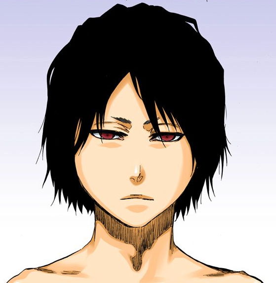
Source_IMG_01
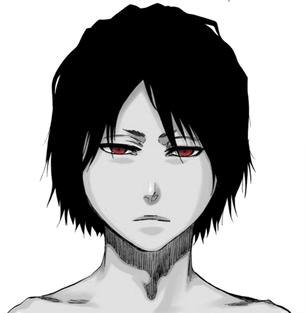
Edit_IMG_01
Final Image 1 profile
Image above was edited and exported from Photoshop.
Graphic Processor: NVIDIA GeForce RTX 3070 Laptop GPU/PCIe/SSE:
Final image format: exported for web options allowing me to save the image in a better quality.
- PNG-24 Dimensions: 624w x 640h.
- SIZE: 72.9K
- SETTINGS: Transparency On - Interlaced Off - Embedded Color Profile Off
- INTERNET STANDARD sRBG
- ORIGINAL PSD FILE SIZE: 4.04m
- PNG SIZE: 124kb
PNG-24 preserves more colour and more contrast with the image whereas png-8 does not meet the image quality required for an online representation.
This image was created specifically for the magazine cover for Bleach. It is to represent an integral character in the anime series.The final piece is indicative of the beginning of the end within the series. It Displays the main characters' names within the series and an image of a yacht who does not come until very late in the series.
CREATIVE PROCESS:
- Firstly, I downloaded the image from source: bleach.fandom.com
- Secondly, I began the process of removing the background from the image which consisted of, adding the image to photoshop > creating an new layer > going into my layer options by double clicking the new created layer > finding the blending options > “blend if” option > then selecting the blue chanel because it has the most levels of contrast between the character and the background> primarily focusing on the “this layer” option which would allow me to selected and alter the different values of the image. > and sliding it down till it was acceptable.
- Thirdly, I added a feathering option to help with making my image more transparent> this consisted of a continuing on the blend option going back to blender and holding on alt on my windows key and dragging down this layer until it met my satisfaction. This process was simplistic due to the image not having many components to it.
- Fourthly, I wanted To add a colour splash to the image. so I Began the process of making the image Black and White by coping/creating two extra layers >1 colour mask and the other desaturate > and then selected the saturates layer and had both the colour mask layer and the background layer > I went to the image option on the top of my screen click on adjustments and scroll down to the desaturate. This changed the image to Black & White. > The next step was to select my colour mask layer > go to the top of my screen and click on the “Select” option > scroll down to “Colour Range'' which would display a new window box > i then selected the “eyedropper tool” and marked which color i wanted to save for instance the color range tool allows the user to keep color on an image by selected the white spaces of that image. I wanted to keep the eye colour of my image, so I was primarily selecting the eyes. > added it to the layer mask and had my finished piece.
IMAGES
Final Image 2
For edits of this image please click the link below.
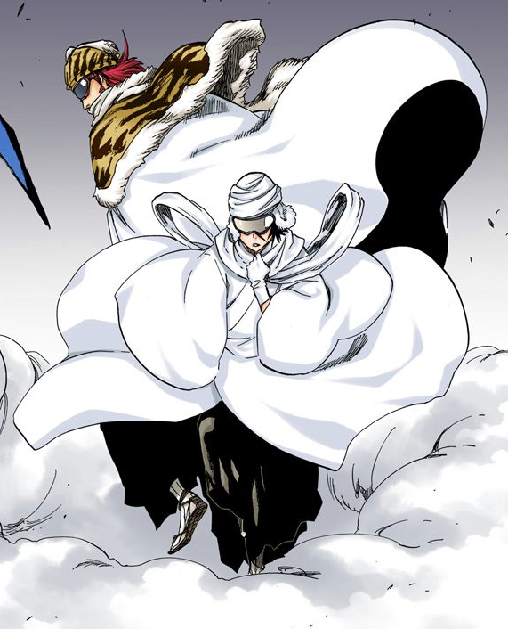
Source_IMG_02
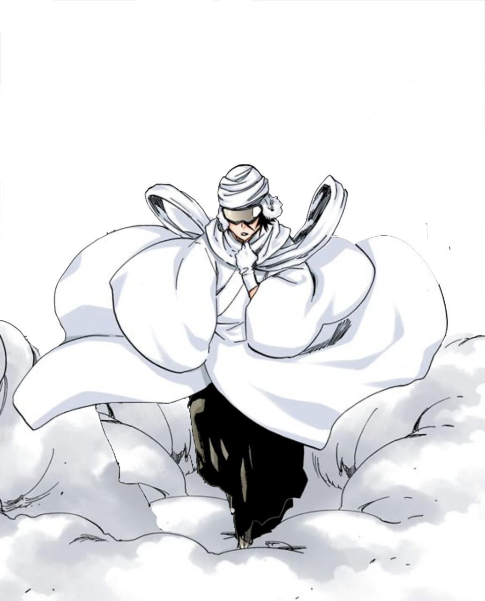
Edit_IMG_02
Final Image 2 profile
Image above was edited and exported from Photoshop.
Graphic Processor: NVIDIA GeForce RTX 3070 Laptop GPU/PCIe/SSE:
Final image format: exported for web options allowing me to save the image in a better quality.
- PNG-24 Dimensions: 518w x 641h.
- SIZE: 100.4K
- SETTINGS: Transparency On - Interlaced Off - Embedded Color Profile Off
- INTERNET STANDARD sRBG
- ORIGINAL PSD FILE SIZE: 3.10m
- PNG SIZE: 224kb
PNG-24 preserves more colour and more contrast with the image whereas png-8 does not meet the image quality required for an online representation.
This image was created specifically for the magazine cover for Bleach. It is to represent an integral character in the anime series.The final piece is indicative of the beginning of the end within the series. It Displays the main characters' names within the series and an image of a yacht who does not come until very late in the series.
CREATIVE PROCESS:
- I downloaded the image from source: bleach.fandom.com
- Secondly I wanted to remove the background and the first character portrayed in the image, so I would only have Rukia in the final image. To complete this I used the method stated above > adding the image to photoshop > creating a new layer > going into my layer options by double clicking the newly created layer > finding the blending options.
- To remove The first character in the image I used the pen tool to individually select on the subjects silhouette > This will then create a new layer called “The Shape” layer > I selected the shape layer and duplicated it > converted the shape to a selection > went to the top window and selected the selection option > and scrolled down and selected the “transform selection” option. This will allow me to move or resize the selected image freely. > I went back to the first layer and copied it then pasted it to the selected shape layer. > i then went to the tools>clone stomp> and increased the hardness to 10% >opacity to 70% and change the brush size to 420px> i then held alt + the spot i wanted to copy. > the copied layered allowed me to add to the smoky cloud effect in the character that i wanted to show just for Rukiai.
IMAGES
Final Image 3
For edits of this image please click the link below.
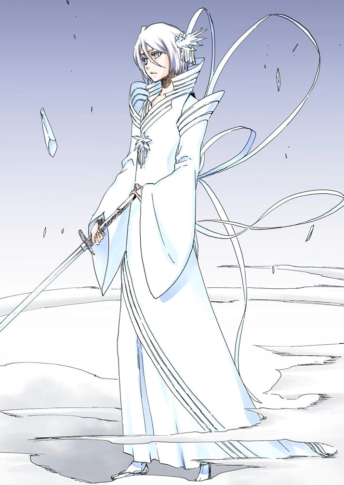
Source_IMG_03
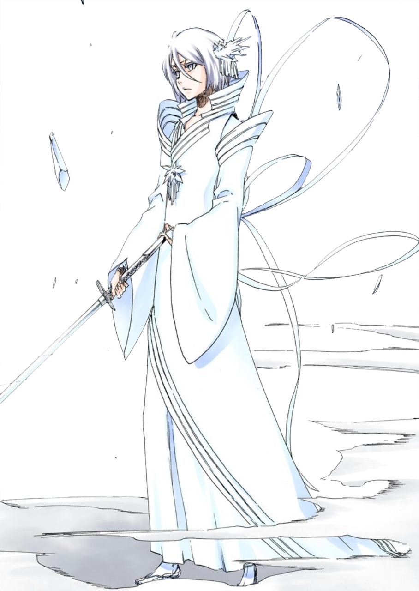
Edit_IMG_03
Final Image 3 profile
Image above was edited and exported from Photoshop.
Graphic Processor: NVIDIA GeForce RTX 3070 Laptop GPU/PCIe/SSE:
Final image format: exported for web options allowing me to save the image in a better quality.
- PNG-24 Dimensions: 811w x 1280h.
- SIZE: 260.5K
- SETTINGS: Transparency On - Interlaced Off - Embedded Color Profile Off
- INTERNET STANDARD sRBG
- METADATA:Copyright & Contact Info
- QUALITY:Bicubic Shaper
- ORIGINAL PSD FILE SIZE: 1.95m
- PNG SIZE: 576kb
PNG-24 preserves more colour and more contrast with the image whereas png-8 does not meet the image quality required for an online representation.
CREATIVE PROCESS:
- Image download from Bleach.fandom.com
- Unfortunately, I was not able to use the same method to remove the background from this image, as it would remove most of the color.
- I opted to use photoshop's “magic eraser tool” which allows me to completely remove parts of an image. I also used the “quick selection” tool which assisted me with selecting small increments and sections of the image. click on the selection tool on the right hand panel > then This process did take some time because I wanted to be as precise as possible. I intended to add a hue/saturation level to fit the color scheme of the previous first page but, decided not to due to it not fitting the aesthetic. The piece tends to stand out more when there is not much work done with it > it was also in correlation to the first Rukiai piece i edited for this interactive magazine
IMAGES
Final Image 4
For edits of this image please click the link below.
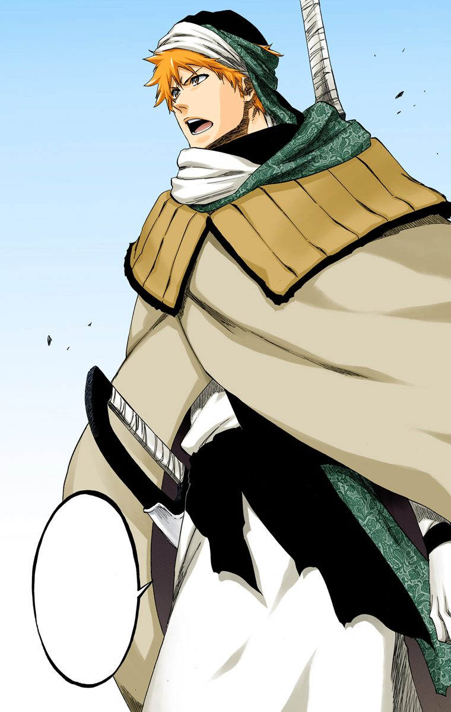
Source_IMG_04
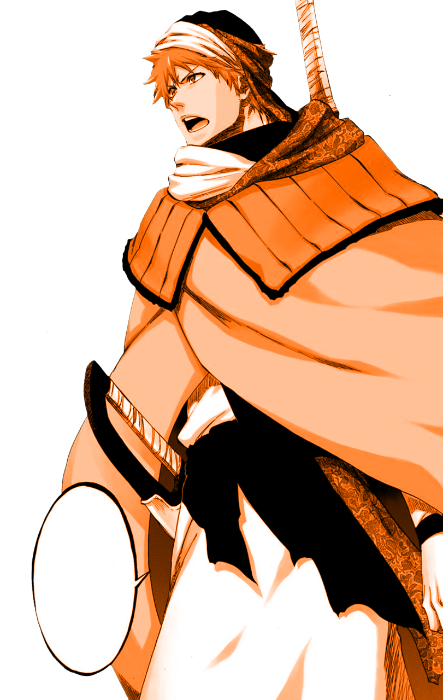
Edit_IMG_04
Final Image 4 profile
Image above was edited and exported from Photoshop.
Graphic Processor: NVIDIA GeForce RTX 3070 Laptop GPU/PCIe/SSE:
Final image format: exported for web options allowing me to save the image in a better quality.
- PNG-24 Dimensions: 406w x 641h.
- SIZE: 75.34K
- SETTINGS: Transparency On - Interlaced Off - Embedded Color Profile Off
- INTERNET STANDARD sRBG
- METADATA:Copyright & Contact Info
- QUALITY:Bicubic Shaper
- ORIGINAL PSD FILE SIZE: 1.95m
- PNG SIZE: 576kb
PNG-24 preserves more colour and more contrast with the image whereas png-8 does not meet the image quality required for an online representation.
CREATIVE PROCESS:
- Image download from Bleach.fandom.com
- Originally filename “Royal Training” Size 190 x 300
- I removed the background from the image which is a concurrent process I perform on all of my images. I did this by adding the image to photoshop > created an new layer > going into my layer options by double clicking the new created layer > finding the blending options > “blend if” option > then selecting the gray chanel > focusing on the “this layer” option which would allow me to selected and alter the different values of the image. > and sliding it down till it was acceptable.
- The next step was to change the color of the image so it matched the magazine banners. This process consisted of duplicating the layer > scrolling down in Photoshop and selecting the “create a new fill and adjustments” layer. Clicked on the “hue and saturation” options > a small window on the right hand side of photoshop should appear. > I then created a custom preset and selected the colorize eyedropper option > this would assist me with selecting the appropriate hue/saturation color I wanted. Hue levels were at 24% > Saturation levels 100% > Lightness levels 0%. This eventually gave me the color I was looking for in my final image.
IMAGES
Final Image 5
For edits of this image please click the link below.
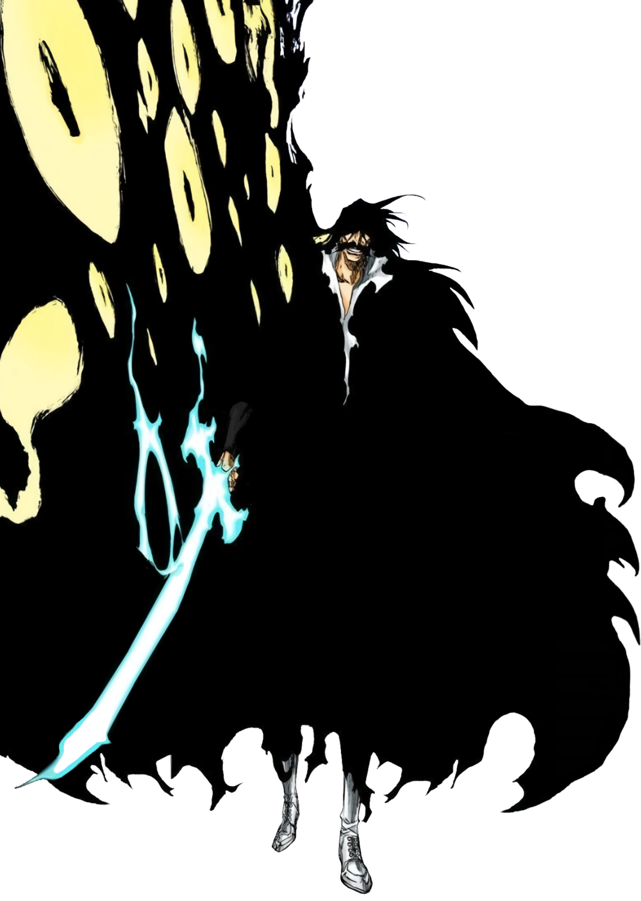
Source_IMG_05
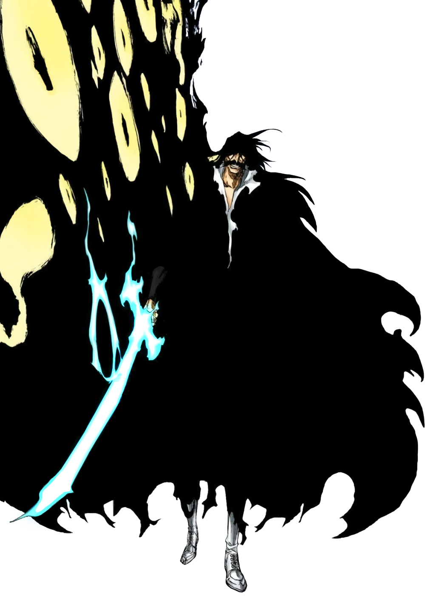
Edit_IMG_05
Final Image 5 profile
Image above was edited and exported from Photoshop.
Graphic Processor: NVIDIA GeForce RTX 3070 Laptop GPU/PCIe/SSE:
Final image format: exported for web options allowing me to save the image in a better quality.
- PNG-24 Dimensions: 1000w x 1403h.
- SIZE: 161.5K
- SETTINGS: Transparency On - Interlaced Off - Embedded Color Profile Off
- INTERNET STANDARD sRBG
- METADATA:Copyright & Contact Info
- QUALITY:Bicubic Shaper
- ORIGINAL PSD FILE SIZE: 2.33mb
- PNG SIZE: 467kb
PNG-24 preserves more colour and more contrast with the image whereas png-8 does not meet the image quality required for an online representation.
CREATIVE PROCESS:
-
This image was downloaded from the bleach.fandom.com website
- Fortunately. For me, the background image was already removed, so I decided to add some subtle color to add more of a glowy effect.
- I first created a flat layer using “ctrl + alt + shift + e”.
- Once created. I went to the top of the screen and changed the “Mode” option from “Normal” to “Color Dodge” > from there I selected the brush tool and held alt + the right mouse key and to pick the color I wanted to use to color dodge.
- I shifted the Opacity to 59% > Flow 35% > Smoothing 11% > Brush Hardness to 57% and Brush Size 45px.
- The primary goal was to add a bit of a colour spillage on the image to emphasize that the sword is paramount to the whole ashetectic to the magazine page.
- This image represents the dark side of my interactive magazine. As reiterated above the magazine is more so an info-mag for different characters that are integral to the anime. I thought showing one of the main characters that would indicate the future or end of the series was important to me.
- Again not much was done with this image, i did not feel like it would have been affected if i added hue/saturation to this image. I have an idea of a minimalist info-mag and I felt like I was stuck with that.
IMAGES
Final Image 6
For edits of this image please click the link below.
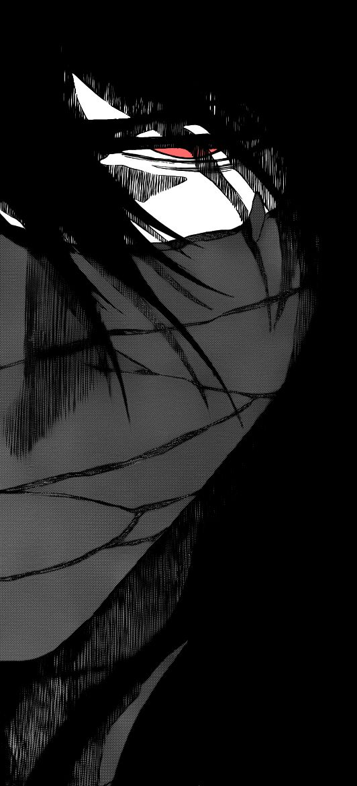
Source_IMG_06
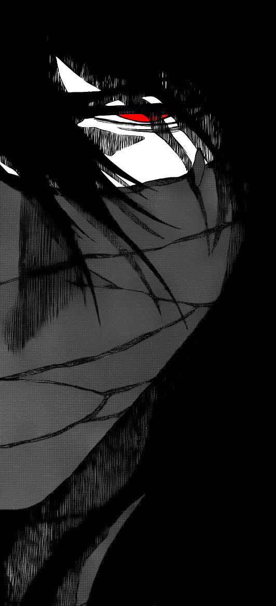
Edit_IMG_06
Final Image 6 profile
Image above was edited and exported from Photoshop.
Graphic Processor: NVIDIA GeForce RTX 3070 Laptop GPU/PCIe/SSE:
Final image format: exported for web options allowing me to save the image in a better quality.
- PNG-24 Dimensions: 562w x 1168h.
- SIZE: 263K
- SETTINGS: Transparency On - Interlaced Off - Embedded Color Profile Off
- INTERNET STANDARD sRBG
- METADATA:Copyright & Contact Info
- QUALITY:Bicubic Shaper
- ORIGINAL PSD FILE SIZE: 1.76mb
- PNG SIZE: 432kb
PNG-24 preserves more colour and more contrast with the image whereas png-8 does not meet the image quality required for an online representation.
CREATIVE PROCESS:
-
I began by downloading the image on pinterest.com but all rights reserved to shonen jump.
- It appeared the image was already edited but I wanted to use the image for my back cover for the magazine.
- The was to not completely alter the image but just a section of the image so it would pop.
- I opened photoshop and dragged the image to it > i then pressed “p” for the pen tool and went around the “eyes” portion of the image > once completed, i right clicked and scrolled down to “make selection” this allowed me to select just a part I needed. next I clicked on ctrl + J space to create a new layer then hit the new layer when back to the previous image layer and use the eraser tool to start removing the colour From behind so there would be nothing there I did this manually due to be blend off Plenty option not being forthcoming > next once I was being treated and went back to the new layer I created and and click be fully brush tool > went to the color swatch and type ff0000 for the brightest and deepest red i could get. Mode set to Color Dodge > Opacity set to 100% > Flow 100% > smoothing 16%. I then proceeded to paint the eye until i was satisfied with the results.
- I added a few more touches to the hair around the eye to make it look right.
- This was the least i did to an image ive worked on this project but, i wanted a staple peace for the back cover of my magazine & i believe the it cam out well.
{kind=link}
{kind=link}
{kind=link}
{kind=link}
{kind=link}
{kind=link}
{kind=link}
{kind=link}
{kind=link}
{kind=link}
{kind=link}
{kind=link}